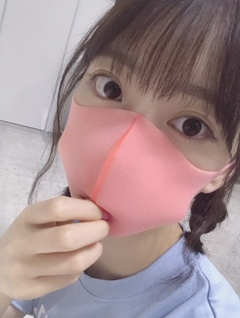
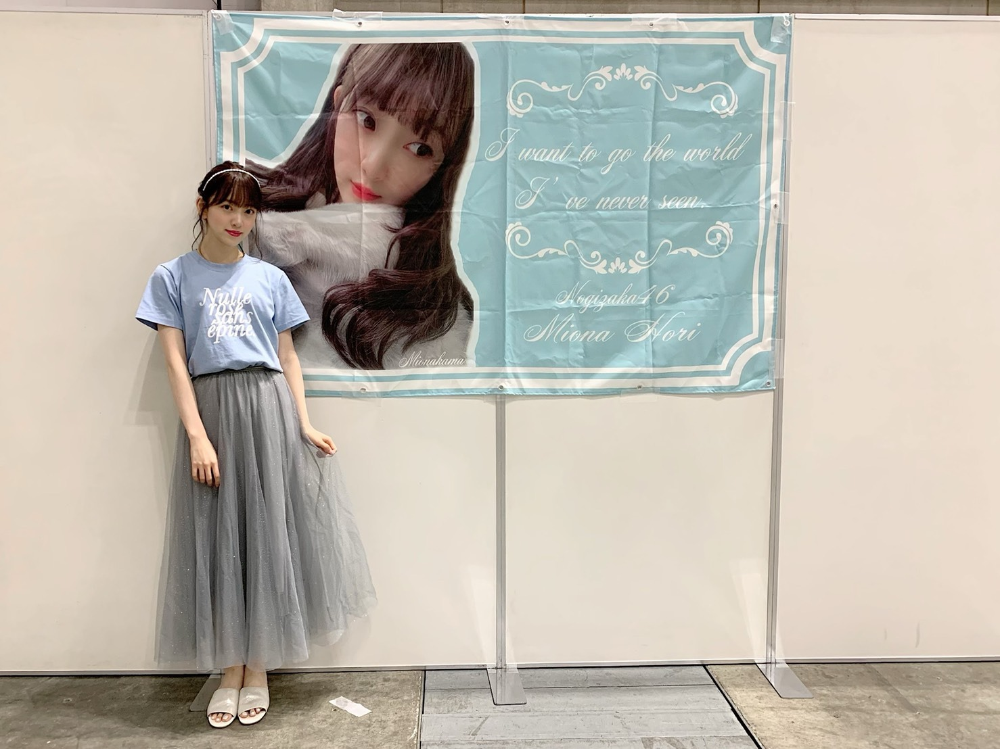
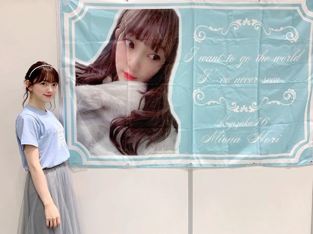
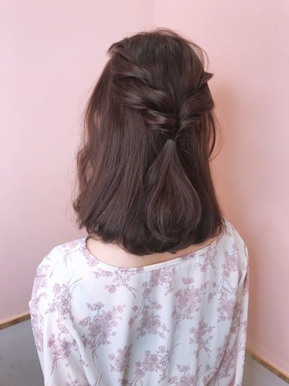

2019/0728Sun鼻がむずむずさん
やほう
ほこりかな？アレルギー反応が出てしまい、握手会途中でマスクを着用させていただきました。すみません。

ちょっと小洒落たオレンジにしてみた〜♡
ちなみに、私のサイリウムカラーはオレンジx白です！
ピッタマスク呼吸しやすくて日々愛用✨たすかる〜

tops ... epine
skirt ... manontokyo
shoes ... oriental traffic
だいすきなくすみブルーと白とキラキラ

ホットギミック ガールミーツボーイの感想ありがとうございます！
まだまだ上映していますので、ぜひ。
今日のメイクはリップとチークにポイントを置いています☺︎
クレドポーボーテ ルージュルミヌ10 スウィートアズキャンディーを塗ってから
クレドポーボーテ ブリアンアレーブルエクラ7 スターダストをたっぷり塗って、ピンクピンク✨させました！
チークはクリニークの13 ROSYpopです
クリニークのチークってかわいくてすき〜

今の髪色が個人的にすごくお気に入りです☺︎
ブラウンピンク なかんじでブラウンベースに赤とピンクを混ぜてもらって髪色抜けても金髪っぽくならないから柔らかいガーリーな印象になります
信号待ち中、カンちゃんに肩を組まれてニヤニヤ♡
では☺︎
2019/07/28 19:12
コメント(281)
未央奈～☆☆
むずむずは大丈夫？
マスクをしていると、
未央奈の大きくて可愛い目が際立つな～
吸い込まれそう。。
あ、吸い込まれた。笑
後ろから見た髪型って、こんなにも可愛いんだ！
結びも綺麗、髪色も本当に綺麗だ～
むずむずは大丈夫？
マスクをしていると、
未央奈の大きくて可愛い目が際立つな～
吸い込まれそう。。
あ、吸い込まれた。笑
後ろから見た髪型って、こんなにも可愛いんだ！
結びも綺麗、髪色も本当に綺麗だ～
みおなさんのサイリウムカラーをインプットしました。
俺の乃木坂46京セラドームライブ参加までアト16日。
俺の乃木坂46京セラドームライブ参加までアト16日。
ブログ更新ありがとうございます！ピンクマスクとても似合っているーーー^_^ 体調には気をつけて頑張ってください！ 応援してます！大好きです！
お疲れ様です!
未央奈～ こんにちは
ブログ更新ありがとうございます。
横浜での個握、おつかれさまでした。
心配されていた台風も昨日、岐阜で熱低に衰え、今朝早く日本の東海上に抜けました。「岐阜」で衰え、無事に握手会が行われたこと考えると、やっぱり「晴れ女」なんでしょうね。
さて、「乃木中」、見ましたよ。放送の時間帯が時間帯なだけに、リアルで怖かったですね。ホラー好きで、「監督」希望の未央奈、そういえば以前の「ゾンビ」のドッキリを思い出しました。まいまいが「痛そう‥‥」と気にしてくれていたこと（そっちかよ）を思い出しました。
来週の大阪全握・ミニライブ、参戦予定です。岐阜での先行映画、ナゴヤドームと参加していますが、直接お話しできること楽しみにしております。
鼻ムズムズ、大丈夫かな？ 絶対に無理は禁物ですよ。
ブログ更新ありがとうございます。
横浜での個握、おつかれさまでした。
心配されていた台風も昨日、岐阜で熱低に衰え、今朝早く日本の東海上に抜けました。「岐阜」で衰え、無事に握手会が行われたこと考えると、やっぱり「晴れ女」なんでしょうね。
さて、「乃木中」、見ましたよ。放送の時間帯が時間帯なだけに、リアルで怖かったですね。ホラー好きで、「監督」希望の未央奈、そういえば以前の「ゾンビ」のドッキリを思い出しました。まいまいが「痛そう‥‥」と気にしてくれていたこと（そっちかよ）を思い出しました。
来週の大阪全握・ミニライブ、参戦予定です。岐阜での先行映画、ナゴヤドームと参加していますが、直接お話しできること楽しみにしております。
鼻ムズムズ、大丈夫かな？ 絶対に無理は禁物ですよ。
堀ちゃん
今日の握手会お疲れ様です
アレルギー大丈夫ですか？
アレルギーが結構あると前に言ってたので体を大事にして下さい（オレンジ色のマスクなんてあるんですね）
8月10日の握手会には行きますので、楽しみにしてます
最後に行ったのが2月16日なので、もう約半年ぶりです（月日が経つの早いですね）
もう一つ24枚目の握手会も堀ちゃんの券が当たったよ！（1会場だけだからホッとしてます）
タイトルも「夜明けまで強がらなくてもいい」と発表されたので、活動も頑張って下さい
あなたの番ですの次が気になって仕方ありません（そらくんはよかったけど黒島ちゃんが心配です）
今日は怖かったですね（みんな狂った演技が上手い）
結局怖いのは人だというのが分かります
俺は犯人が許せません（こんなにドラマで主人公に感情移入したのは初めてです）
堀ちゃんも観てるみたいなので、感想ブログ書いて下さい
暑いけど明日も頑張りましょう
ありがとうございました
今日の握手会お疲れ様です
アレルギー大丈夫ですか？
アレルギーが結構あると前に言ってたので体を大事にして下さい（オレンジ色のマスクなんてあるんですね）
8月10日の握手会には行きますので、楽しみにしてます
最後に行ったのが2月16日なので、もう約半年ぶりです（月日が経つの早いですね）
もう一つ24枚目の握手会も堀ちゃんの券が当たったよ！（1会場だけだからホッとしてます）
タイトルも「夜明けまで強がらなくてもいい」と発表されたので、活動も頑張って下さい
あなたの番ですの次が気になって仕方ありません（そらくんはよかったけど黒島ちゃんが心配です）
今日は怖かったですね（みんな狂った演技が上手い）
結局怖いのは人だというのが分かります
俺は犯人が許せません（こんなにドラマで主人公に感情移入したのは初めてです）
堀ちゃんも観てるみたいなので、感想ブログ書いて下さい
暑いけど明日も頑張りましょう
ありがとうございました
堀ちゃんやほー！( ´ ▽ ` )
今日は握手会お疲れ様でした！
アレルギー大丈夫でしょうか、疲れからも身体の防衛反応が敏感になり、症状が出やすくなるとも言われているので、お忙しいとは思いますができるだけゆっくり休めてくださいね( ´ ー ` )
しかしマスクしていても可愛い、堀ちゃんの半分しか見えないのにめちゃめちゃ可愛い(*´ー｀*)
マスク姿は目の綺麗さがより感じられますね〜、お鼻もお口も好きなので見たいですが我慢します(^^)笑
それとオレンジのマスクってあるんですね！オシャレ！
堀ちゃんのサイリウムカラーのマスク、欲しくなります(o^^o)
日常生活でも、堀ちゃんの影響でオレンジとくすみブルーを見ると「堀ちゃんの色だ！」と反応するようになってきています、堀ちゃんが僕に与える影響は莫大です( ´ ▽ ` )笑
これからももっと影響されていきたいと思っています(^^)
最近暑いですね〜、関西は梅雨明けしたので一足先に夏を楽しませてもらっています、関東ももうすぐですかね？( ´ ▽ ` )
暑さに負けず頑張ってますー！常温の水をこまめに飲んでます！(o^^o)
昼間の太陽がグワーッと照りつけてくるのも、気分が高揚して好きですし、夕方や夜の暗いけどもムワッと蒸し暑さを感じるあの感じもなんか好きです(^^)
星とか月が見えると更にいいですね、夏は夜が素敵です、清少納言も言ってました( ´ ▽ ` )笑
まだまだ夏は始まってもないですね、目一杯楽しんでいきましょう(o^^o)♩
最近も堀ちゃんのブログはもちろん、モバメや755など全部のコンテンツで楽しませてもらっています( ´ ▽ ` )
少し前のブログに堀ちゃんも書かれていましたが、笑うのって本当に大事だなぁと最近改めて( ´ ー ` )
多少しんどいことが続いても、合間で15分ぐらい友達と他愛ない話で笑えたら、それだけで乗り切る力が貰えます(o^^o)
堀ちゃんにもいつも笑顔を貰えていて、僕が自然と頑張れているのは堀ちゃんのおかげかなぁとふと感じた今日この頃です( ´ ▽ ` )
いつもありがとうございます(o^^o)♩
堀ちゃんも笑顔が溢れる毎日を過ごせますように(*´ー｀*)
ではでは、またコメントさせてください！(o^^o)
水、ミネラル、好きなものをたくさん食べて、どうか毎日お元気で！
おやすみおな！( ´ ▽ ` )
今日は握手会お疲れ様でした！
アレルギー大丈夫でしょうか、疲れからも身体の防衛反応が敏感になり、症状が出やすくなるとも言われているので、お忙しいとは思いますができるだけゆっくり休めてくださいね( ´ ー ` )
しかしマスクしていても可愛い、堀ちゃんの半分しか見えないのにめちゃめちゃ可愛い(*´ー｀*)
マスク姿は目の綺麗さがより感じられますね〜、お鼻もお口も好きなので見たいですが我慢します(^^)笑
それとオレンジのマスクってあるんですね！オシャレ！
堀ちゃんのサイリウムカラーのマスク、欲しくなります(o^^o)
日常生活でも、堀ちゃんの影響でオレンジとくすみブルーを見ると「堀ちゃんの色だ！」と反応するようになってきています、堀ちゃんが僕に与える影響は莫大です( ´ ▽ ` )笑
これからももっと影響されていきたいと思っています(^^)
最近暑いですね〜、関西は梅雨明けしたので一足先に夏を楽しませてもらっています、関東ももうすぐですかね？( ´ ▽ ` )
暑さに負けず頑張ってますー！常温の水をこまめに飲んでます！(o^^o)
昼間の太陽がグワーッと照りつけてくるのも、気分が高揚して好きですし、夕方や夜の暗いけどもムワッと蒸し暑さを感じるあの感じもなんか好きです(^^)
星とか月が見えると更にいいですね、夏は夜が素敵です、清少納言も言ってました( ´ ▽ ` )笑
まだまだ夏は始まってもないですね、目一杯楽しんでいきましょう(o^^o)♩
最近も堀ちゃんのブログはもちろん、モバメや755など全部のコンテンツで楽しませてもらっています( ´ ▽ ` )
少し前のブログに堀ちゃんも書かれていましたが、笑うのって本当に大事だなぁと最近改めて( ´ ー ` )
多少しんどいことが続いても、合間で15分ぐらい友達と他愛ない話で笑えたら、それだけで乗り切る力が貰えます(o^^o)
堀ちゃんにもいつも笑顔を貰えていて、僕が自然と頑張れているのは堀ちゃんのおかげかなぁとふと感じた今日この頃です( ´ ▽ ` )
いつもありがとうございます(o^^o)♩
堀ちゃんも笑顔が溢れる毎日を過ごせますように(*´ー｀*)
ではでは、またコメントさせてください！(o^^o)
水、ミネラル、好きなものをたくさん食べて、どうか毎日お元気で！
おやすみおな！( ´ ▽ ` )
今日握手ありがとー！
あれオレンジのマスクやったんや笑ピンクかと思ってた
1部最後まで残ってくれててありがとうございます
未央ちゃんのおかげで握手できました笑
着いた瞬間怒られたのが嬉しすぎてニヤケてしまいました
次からはちゃんと時間内にくるので許してください
5部でマスク可愛いて、言ったら、帽子ちっさいねって弄られました笑
わしの顔がでかいからじゃ！で
笑ってくれてほんとに嬉しいかった
ゆっくり休んでね！今日最高の1日をくれてありがとう！
お疲れ様でした！おやすみおな
あれオレンジのマスクやったんや笑ピンクかと思ってた
1部最後まで残ってくれててありがとうございます
未央ちゃんのおかげで握手できました笑
着いた瞬間怒られたのが嬉しすぎてニヤケてしまいました
次からはちゃんと時間内にくるので許してください
5部でマスク可愛いて、言ったら、帽子ちっさいねって弄られました笑
わしの顔がでかいからじゃ！で
笑ってくれてほんとに嬉しいかった
ゆっくり休んでね！今日最高の1日をくれてありがとう！
お疲れ様でした！おやすみおな
アレルギー大丈夫？
私もアレルギーでほこりだめだから。
体調からくる自律神経の乱れも
関係するみたいだからゆっくり休むのも
大事だよ。
私もアレルギーでほこりだめだから。
体調からくる自律神経の乱れも
関係するみたいだからゆっくり休むのも
大事だよ。
暑くなってきたねー。そんな中、握手会ご苦労さん。
鼻ムズムズ大変だ、早く治るといいね。
ブラウンピンクかわいいよ、似合ってる。
乃木坂工事中見たよ。
怖かったー！
全部怖かった、堀さんプロデュースのやつなんてヤバイでしょ、怖い系苦手なんで今日は苦しかった。
次週も怖いやつだね(汗)
では
鼻ムズムズ大変だ、早く治るといいね。
ブラウンピンクかわいいよ、似合ってる。
乃木坂工事中見たよ。
怖かったー！
全部怖かった、堀さんプロデュースのやつなんてヤバイでしょ、怖い系苦手なんで今日は苦しかった。
次週も怖いやつだね(汗)
では
髪型かわいい！！真似したい✨
握手会とか人多いもんね、体調に気を付けて頑張ってね .+:｡ ヾ(◎´∀｀◎)ﾉ ｡:+.
握手会とか人多いもんね、体調に気を付けて頑張ってね .+:｡ ヾ(◎´∀｀◎)ﾉ ｡:+.
マスクをしても
かわいい人はかわいいんだなぁっていうね
かわいい人はかわいいんだなぁっていうね
未央奈ちゃん、ブログ更新ありがとう
横浜の個握の5部に行かせて頂きました。その時も言わせて頂きましたが、短い時間ではとても伝えきれないので、計4度観たホットギミックの感想を以下に。
繰り返し観て分かったのは、何度観ても違う感動が味わえる映画だと言うこと。
そして未央奈ちゃんファンは複数回観るのが絶対にオススメ。
初見はファン心理が邪魔してしまう部分も有るには有るけど、2回目以降は純粋に楽しめる。
自分に関して言えば4回目にして主要登場人物全員を愛しくまで思えました。
それぞれ抱えている事情や思いが有って、一概に誰が良いとか悪いとか判断出来ない。
皆それぞれが優しくて、誰かの事を思いやっている。
4度も観てストーリー頭に入っているのに、まだ途中で涙を流してる自分にも驚いた。
「青春映画」ってどこか偶像的で苦手意識有ったけど、大分概念変わりました。
ストーリーは10代の時の何かはっきりしない歯がゆくも繊細な部分がリアルに表現されていて、それでいて映画ならではの非日常的とも言える映像美やどこか抽象的な世界観もしっかりと有る。
監督、役者さん達、スタッフの方々が一体となって創り上げた作品だと素人の自分にも理解出来ます。
何より撮影当時21歳か22歳の未央奈ちゃんが、思春期の女子高生を見事に演じ切ってる。
感動をありがとう♪
勿論これからもどんどん映像のお仕事にチャレンジして欲しいけど、個人的にはたまには舞台のお仕事もして貰いたいです。
横浜の個握の5部に行かせて頂きました。その時も言わせて頂きましたが、短い時間ではとても伝えきれないので、計4度観たホットギミックの感想を以下に。
繰り返し観て分かったのは、何度観ても違う感動が味わえる映画だと言うこと。
そして未央奈ちゃんファンは複数回観るのが絶対にオススメ。
初見はファン心理が邪魔してしまう部分も有るには有るけど、2回目以降は純粋に楽しめる。
自分に関して言えば4回目にして主要登場人物全員を愛しくまで思えました。
それぞれ抱えている事情や思いが有って、一概に誰が良いとか悪いとか判断出来ない。
皆それぞれが優しくて、誰かの事を思いやっている。
4度も観てストーリー頭に入っているのに、まだ途中で涙を流してる自分にも驚いた。
「青春映画」ってどこか偶像的で苦手意識有ったけど、大分概念変わりました。
ストーリーは10代の時の何かはっきりしない歯がゆくも繊細な部分がリアルに表現されていて、それでいて映画ならではの非日常的とも言える映像美やどこか抽象的な世界観もしっかりと有る。
監督、役者さん達、スタッフの方々が一体となって創り上げた作品だと素人の自分にも理解出来ます。
何より撮影当時21歳か22歳の未央奈ちゃんが、思春期の女子高生を見事に演じ切ってる。
感動をありがとう♪
勿論これからもどんどん映像のお仕事にチャレンジして欲しいけど、個人的にはたまには舞台のお仕事もして貰いたいです。
だいすき((o(^∇^)o))
未央奈ちゃん、きょうも一日お疲れさまです。
髪型ひとつでイメージが変わりますね。
特に未央奈ちゃんはね！
だから変えるたび新しい未央奈ちゃんを
発見できて楽しいです！
これからも未央奈ちゃんらしく
頑張ってくださいね！！！
鼻がむずむずさん、大変ですね！
お大事にしてください！！！
ともに応援しています！！！
髪型ひとつでイメージが変わりますね。
特に未央奈ちゃんはね！
だから変えるたび新しい未央奈ちゃんを
発見できて楽しいです！
これからも未央奈ちゃんらしく
頑張ってくださいね！！！
鼻がむずむずさん、大変ですね！
お大事にしてください！！！
ともに応援しています！！！
更新ありがとうございます。
おはよう、みおな❗️(笑)
昨日は握手会、おつかれさまね❗️(笑)
ブログもありがとう❗️❗️(笑)
昨日は、こういう感じだったんだね・・・
マスクしてるみおな、お目目がかわいい❗️❗️❗️❗️(笑)
みおなは、目がおっきいよね❗️(笑)
髪型も俺の好きなアップにしてるバージョン・・・
昨日は是非、会いたかった・・・(笑←どういう日本語よ・・・(笑))
身体の方、大丈夫❓️
そう、みおなは、体質が敏感、というか、繊細な面があるからね・・・
そうやって、事前の予防・・・
大切なことだよね・・・
それから、食生活も気を付けないとね・・・
みおな、ちょっと偏りがちだから・・・
俺もそうなんだけどね・・・
トレーニングしてる部分もあり、節制しながら、筋肉も増やさないといけない・・・
まぁ、いけない、ってわけじゃないんだけど、買い食いすると、どうしても脂質が多めになってしまうからね・・・
うまいメニューを、考えないとね・・・(笑)
そうそう、みおな、今の髪色、いい感じだね❗️❗️(笑)
福岡の前に変えた、っていう色かな❓️
楽しみに待ってました❗️❗️(笑)
でもさ、せっかくメイクのこと書いてくれてるのに、近くのお顔の写メがない、っていう・・・(笑)
でも、女の子は、これでも参考になるのかな・・・(笑)
そして、５枚目の写メは、これは目を引くカップルだー❗️❗️(笑)
普段は、胸元のサングラスをつけてるのかな❓️
俺だったら、ここでチュッ❗️っていくね❗️❗️(笑)
俺、結構グイグイいくタイプ❗️(笑)
みおなも、楽しんでる表情で、なかなかいい感じよ❗️❗️(笑)
関東地方は、今日にも梅雨明けかも、って・・・
楽しい夏になるといいね❗️❗️(笑)
熱中症、夏バテに気を付けよう❗️(笑)
それじゃ、またね❗️❗️(笑)
昨日は握手会、おつかれさまね❗️(笑)
ブログもありがとう❗️❗️(笑)
昨日は、こういう感じだったんだね・・・
マスクしてるみおな、お目目がかわいい❗️❗️❗️❗️(笑)
みおなは、目がおっきいよね❗️(笑)
髪型も俺の好きなアップにしてるバージョン・・・
昨日は是非、会いたかった・・・(笑←どういう日本語よ・・・(笑))
身体の方、大丈夫❓️
そう、みおなは、体質が敏感、というか、繊細な面があるからね・・・
そうやって、事前の予防・・・
大切なことだよね・・・
それから、食生活も気を付けないとね・・・
みおな、ちょっと偏りがちだから・・・
俺もそうなんだけどね・・・
トレーニングしてる部分もあり、節制しながら、筋肉も増やさないといけない・・・
まぁ、いけない、ってわけじゃないんだけど、買い食いすると、どうしても脂質が多めになってしまうからね・・・
うまいメニューを、考えないとね・・・(笑)
そうそう、みおな、今の髪色、いい感じだね❗️❗️(笑)
福岡の前に変えた、っていう色かな❓️
楽しみに待ってました❗️❗️(笑)
でもさ、せっかくメイクのこと書いてくれてるのに、近くのお顔の写メがない、っていう・・・(笑)
でも、女の子は、これでも参考になるのかな・・・(笑)
そして、５枚目の写メは、これは目を引くカップルだー❗️❗️(笑)
普段は、胸元のサングラスをつけてるのかな❓️
俺だったら、ここでチュッ❗️っていくね❗️❗️(笑)
俺、結構グイグイいくタイプ❗️(笑)
みおなも、楽しんでる表情で、なかなかいい感じよ❗️❗️(笑)
関東地方は、今日にも梅雨明けかも、って・・・
楽しい夏になるといいね❗️❗️(笑)
熱中症、夏バテに気を付けよう❗️(笑)
それじゃ、またね❗️❗️(笑)
未央奈。
おはよう。今日も凄まじい湿気ですぜ。
まだ梅雨明けしてないのかしら？
未央奈ぁぁぁ。のお顔を見ながら、今日も仕事行ってきまっす。
じゃぁ
おはよう。今日も凄まじい湿気ですぜ。
まだ梅雨明けしてないのかしら？
未央奈ぁぁぁ。のお顔を見ながら、今日も仕事行ってきまっす。
じゃぁ
握手会楽しかったです！ゆっくり休んで
未央奈ブログ更新ありがとう
握手会行けなかったら写真載せてくれて嬉しい
体調気をつけてね
信号待ちしてる時の写真の未央奈美人過ぎん？
握手会行けなかったら写真載せてくれて嬉しい
体調気をつけてね
信号待ちしてる時の写真の未央奈美人過ぎん？
堀ちゃん、ブログ更新ありがとう〜
昨日は、横浜個別握手会1部、2部行かせていただきました。
久しぶりに堀ちゃん会えて、本当に幸せでした。
堀ちゃんの笑顔と優しさに触れられて、本当に幸せでした！
８月１０日の個別握手会も会いに行くからね〜
堀ちゃん、大好きだよー
昨日は、横浜個別握手会1部、2部行かせていただきました。
久しぶりに堀ちゃん会えて、本当に幸せでした。
堀ちゃんの笑顔と優しさに触れられて、本当に幸せでした！
８月１０日の個別握手会も会いに行くからね〜
堀ちゃん、大好きだよー
みおちゃん無理しないでね( ´ : ω : ` )
メイク紹介うれしい！！！参考にしてます
熱中症気をつけてお仕事頑張ってね〜！
メイク紹介うれしい！！！参考にしてます
熱中症気をつけてお仕事頑張ってね〜！
未央ちゃん
ブログ更新ありがとう
暑いね～
体調気をつけて頑張ってね
ブログ更新ありがとう
暑いね～
体調気をつけて頑張ってね
未央奈ちゃん更新ありがとー！
やほう！大丈夫かい？？
最近いろんな色のマスクがあるよねー。
オレンジ良き。
マスクしてても可愛い(^o^)
今の髪色自分も好き！
落ち着いた感じで良き。
そんな幸せな信号待ち見たことない！
いつかは混ざりたいものです。
(無理ですが)
ではでは
今日も素敵な１日を。
やほう！大丈夫かい？？
最近いろんな色のマスクがあるよねー。
オレンジ良き。
マスクしてても可愛い(^o^)
今の髪色自分も好き！
落ち着いた感じで良き。
そんな幸せな信号待ち見たことない！
いつかは混ざりたいものです。
(無理ですが)
ではでは
今日も素敵な１日を。
未央奈さんおはよう ✨☀️。僕もアトピー皮膚炎なので未央奈さんのアレルギー皮膚のトラブル同じですね。もしかしたら気があうかも。嬉しい 未央奈さんが可愛いから。皮膚のトラブルまたあったら教えてあげるから。ではまたコメントします。
みおなちゃん、おはようございます。
昨日の個握お疲れ様でした。
乃木坂工事中、僕は見たよ。録画して見ました。ゆかた姿のみおなちゃん、めっちゃ美しくて、めっちゃかわいかったよ。ゆかた、めっちゃ似合ってたよ。みおなちゃんの創作ドラマ、めっちゃ怖かったです。
みおなちゃん、アレルギー大丈夫ですか。はやくなおるといいね。
みおなちゃん、体調に気をつけて仕事頑張ってね。
またコメントするね。
昨日の個握お疲れ様でした。
乃木坂工事中、僕は見たよ。録画して見ました。ゆかた姿のみおなちゃん、めっちゃ美しくて、めっちゃかわいかったよ。ゆかた、めっちゃ似合ってたよ。みおなちゃんの創作ドラマ、めっちゃ怖かったです。
みおなちゃん、アレルギー大丈夫ですか。はやくなおるといいね。
みおなちゃん、体調に気をつけて仕事頑張ってね。
またコメントするね。
こんにちは〜
、、もう、、すっかり夏だね〜
、、アレルギー、、注意だね〜
、、いわゆる、、ほっこり、、アレルギー（笑）じゃないかな〜
、、ほっこり、、した話、、は、、夏場は、、暑くて、、ダメ。。（笑）
、、冷えた、、（笑）ホラーを、、みたいな、、
、、じゃあ、、またね〜
、、もう、、すっかり夏だね〜
、、アレルギー、、注意だね〜
、、いわゆる、、ほっこり、、アレルギー（笑）じゃないかな〜
、、ほっこり、、した話、、は、、夏場は、、暑くて、、ダメ。。（笑）
、、冷えた、、（笑）ホラーを、、みたいな、、
、、じゃあ、、またね〜
モバイル無理勢からしたらブログ更新めっちゃありがたいねん！！！ほんまにありがとう！しかも未央奈推しメン！
大好きぃ~~
大好きぃ~~
昨日初めて握手会行きました。とても可愛くて最初声出てこなかったですw 次は11月9日に行くのでその時はしっかり話せるように頑張ります！！
未央奈ブログ更新ありがとう
オレンジ色のマスクなんて見たことないからビックリやわ笑！
そんなんどこに売ってるんな教えて欲しいわ！後俺もそうやけど、咳が止まらへんからアレルギーだけではなく、風邪にも気をつけてね。それじゃあまたの…
オレンジ色のマスクなんて見たことないからビックリやわ笑！
そんなんどこに売ってるんな教えて欲しいわ！後俺もそうやけど、咳が止まらへんからアレルギーだけではなく、風邪にも気をつけてね。それじゃあまたの…
堀ちゃんブログありがと!
握手会お疲れ様でした
体調に気をつけてくださいね
握手会お疲れ様でした
体調に気をつけてくださいね
アレルギーは大変だね！
悪化しないように気をつけてね！
悪化しないように気をつけてね！
みおな

未央奈さんマスクしててもかわいい
乃木中のホラーよかったよ
暑い日が続くけど体調に気をつけてね
乃木中のホラーよかったよ
暑い日が続くけど体調に気をつけてね
大好きな未央奈ちゃんおはよう。乃木坂工事中見たよ‼️浴衣凄く似合ってて、可愛いかったよ。また、一段と大好きになったよ。ほーりーホラーズで是非映画やユニット曲など沢山活動みたいよ。今日も未央奈ちゃんや未央奈ちゃんに携わっている方々、ファンの皆さんが、沢山スタミナや栄養あるもの沢山補給して、元気に、幸せに過ごしせるように、願ってるよ。大好きやおー
未央奈更新ありがとう！
未央奈かわいいね！大好きだよ。
昨日初めて握手しに行きました。 今まで部活の大会とか受験で行けなかったんですけど、昨日ようやく会えてとても嬉しかったです！！！！ 体調悪そうな中で釣ってくれてとても可愛すぎて声出ませんでしたw 次は幕張の全握になるので、その時も絶対名札付けて行くので、待ってて下さい！！
髪型カワエエ！！！！！！！！！！！！！！！！！！！！！！！！！
ブログ更新ありがとう〜！
昨日は握手会お疲れ様でした︎！くすみブルー本当に似合っていて可愛すぎる…♡
クレドポーボーテ ブリアンアレーブルエクラ7 スターダスト、前に未央奈ちゃんがブログで紹介していたのを見て私も買ったんだ〜︎☺︎お気に入りだし今日付けてる。笑
カンちゃんといると未央奈ちゃんの彼女感がすごい…！カンちゃんイケメン笑
この時期はエアコンからのほこりとかで喉やられるよね…お大事にしてください(;_;)
昨日は握手会お疲れ様でした︎！くすみブルー本当に似合っていて可愛すぎる…♡
クレドポーボーテ ブリアンアレーブルエクラ7 スターダスト、前に未央奈ちゃんがブログで紹介していたのを見て私も買ったんだ〜︎☺︎お気に入りだし今日付けてる。笑
カンちゃんといると未央奈ちゃんの彼女感がすごい…！カンちゃんイケメン笑
この時期はエアコンからのほこりとかで喉やられるよね…お大事にしてください(;_;)
堀ちゃん，ブログ更新ありがとう～!
そして、、昨日の乃木中の、、
未央奈がつくった映像…クォリティー高かった!
怖かったよ；＿；
来週も楽しみ(`•ω•´)/✩
今日も暑いですね、、、
ほんとうに体調には気を付けて(♡˙ᵕ˙♡)
そして、、昨日の乃木中の、、
未央奈がつくった映像…クォリティー高かった!
怖かったよ；＿；
来週も楽しみ(`•ω•´)/✩
今日も暑いですね、、、
ほんとうに体調には気を付けて(♡˙ᵕ˙♡)
未央奈ちゃんありがとうございます！頑張ります‼頑張って下さい！ありがとうございます！楽しみにしてます‼頑張ります‼気をつけて下さい！ありがとうございます
未央奈ちゃんブログありがとう♡ᵕ̈*⑅
個握お疲れ様！
行きたかったな〜。。
アレルギー、大丈夫かな？
オレンジのピッタマスクオシャレで、かわいいね❁︎
8月にもパシフィコで１回握手会あるね！頑張ってね☺︎
工事中の未央奈ちゃんが作ったの、とっても良かったです！
またコメントします(˙˘˙̀ ✰
個握お疲れ様！
行きたかったな〜。。
アレルギー、大丈夫かな？
オレンジのピッタマスクオシャレで、かわいいね❁︎
8月にもパシフィコで１回握手会あるね！頑張ってね☺︎
工事中の未央奈ちゃんが作ったの、とっても良かったです！
またコメントします(˙˘˙̀ ✰
可愛すぎ〜!
やほうー！
アレルギーとっても心配ですね～
オレンジマスク姿でも可愛いらしいけど、
喉はとても大切なので大事にして下さい◎
くすみブルーと白とキラキラ爽やかです！
髪色も素敵だし、髪型も絵になってます♡
レアな後ろ姿もとっても悩ましいけど、、
カンちゃんがとっても羨ましいですよ～♡
昨夜の乃木中もとっても楽しかったですー！
ホーリーホラーズなかなかシュールでした☆
れのちゃんオバケは可愛いらしかったけど、
みおちゃんとホラーはとても似合いますね☆
白い浴衣姿もとっても似合ってましたよ～☺
アレルギーとっても心配ですね～
オレンジマスク姿でも可愛いらしいけど、
喉はとても大切なので大事にして下さい◎
くすみブルーと白とキラキラ爽やかです！
髪色も素敵だし、髪型も絵になってます♡
レアな後ろ姿もとっても悩ましいけど、、
カンちゃんがとっても羨ましいですよ～♡
昨夜の乃木中もとっても楽しかったですー！
ホーリーホラーズなかなかシュールでした☆
れのちゃんオバケは可愛いらしかったけど、
みおちゃんとホラーはとても似合いますね☆
白い浴衣姿もとっても似合ってましたよ～☺
未央奈さん可愛い❤️。昨日の乃木中見たよ。浴衣姿似合うね。皮膚のトラブルまたあったら教えて自分もアトピー皮膚炎なので未央奈さん関東エリア梅雨明けました。これから１週間暑くなるって女性は紫外線の敵です。未央奈さんのアレルギーを守ります。体気をつけて仕事頑張って下さい。
カンちゃんと仲良いのすごい！みおなちゃんのコミュ力尊敬します(;_;)
こんばんはお疲れさま☺
鼻がムズムズ大丈夫かい？
俺もまだ夏風邪完全には治ってないよ。
アレルギー？大変やろうに。
無理なくね。
オレンジ色綺麗なマスクやな✨
堀ちゃんサイリウムオレンジ×白色知らなかった(笑)ごめんです。
やっぱりライヴに…と言い訳をしてみた(笑)
個人的には巨人カラーで好きです☺
この夏好きなんは、水色、オレンジ、白色、深緑、後は仕事で黒色かな？
スラックスや鞄や。
堀ちゃんのこの夏イチは何色かな？
あと髪型後ろ姿も大人っぽいね。
これも個人的にはショーとが好きなんはゆずれない(笑)✨
堀ちゃんは似合う髪型更に目指してね✨
ちなみに、ショーとが好きな片方。
杉咲花ちゃん、武田玲奈ちゃん、日向坂の松田好花ちゃんかな✨
おっと、あと生駒ちゃん☺
髪型は人各々好みあるし、人各々好きな髪型にしたいもんね✨
ではではまたね✨
体調気をつけてくださいね。
ほなね、堀ちゃん☺
頑張りや☺
鼻がムズムズ大丈夫かい？
俺もまだ夏風邪完全には治ってないよ。
アレルギー？大変やろうに。
無理なくね。
オレンジ色綺麗なマスクやな✨
堀ちゃんサイリウムオレンジ×白色知らなかった(笑)ごめんです。
やっぱりライヴに…と言い訳をしてみた(笑)
個人的には巨人カラーで好きです☺
この夏好きなんは、水色、オレンジ、白色、深緑、後は仕事で黒色かな？
スラックスや鞄や。
堀ちゃんのこの夏イチは何色かな？
あと髪型後ろ姿も大人っぽいね。
これも個人的にはショーとが好きなんはゆずれない(笑)✨
堀ちゃんは似合う髪型更に目指してね✨
ちなみに、ショーとが好きな片方。
杉咲花ちゃん、武田玲奈ちゃん、日向坂の松田好花ちゃんかな✨
おっと、あと生駒ちゃん☺
髪型は人各々好みあるし、人各々好きな髪型にしたいもんね✨
ではではまたね✨
体調気をつけてくださいね。
ほなね、堀ちゃん☺
頑張りや☺
未央奈ー、更新有難う
ピンクマスク可愛すぎじゃないですか？
似合う！最高ッ！
ピンクマスク可愛すぎじゃないですか？
似合う！最高ッ！


握手会お疲れ様でしたー。最近はマスクもお洒落なのですねー。オレンジ可愛いですね！！
未央奈ちゃんもどんどんきれいになってますね！！最近は、若い頃より、年齢が増していくにつれて可愛さも増していく女性が登場してきました。未央奈ちゃんも将来が楽しみです。
ではまた。